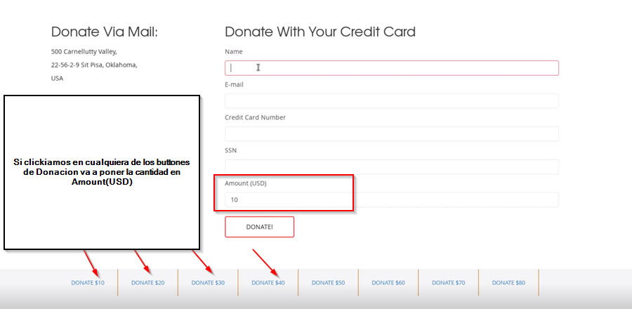

La mayor direncia de los otros XSS es que el DOM XSS corre en el cliente significa que el payload no es procesado por el server solo por web browser de la victima
Los DOM XSS pueden bypass lo mecanismos de defensa que tienen los browsers como Chrome

Sin que la pagina refresh va a actualizar la cantidad.Esto es gracias a una funcion de javascript

Para probar si hay un DOM XSS hacemos esta prueba


En vez de payload escribimos

><svg/onload=alert(1337)>

Nos sale el pop-up en la pagina